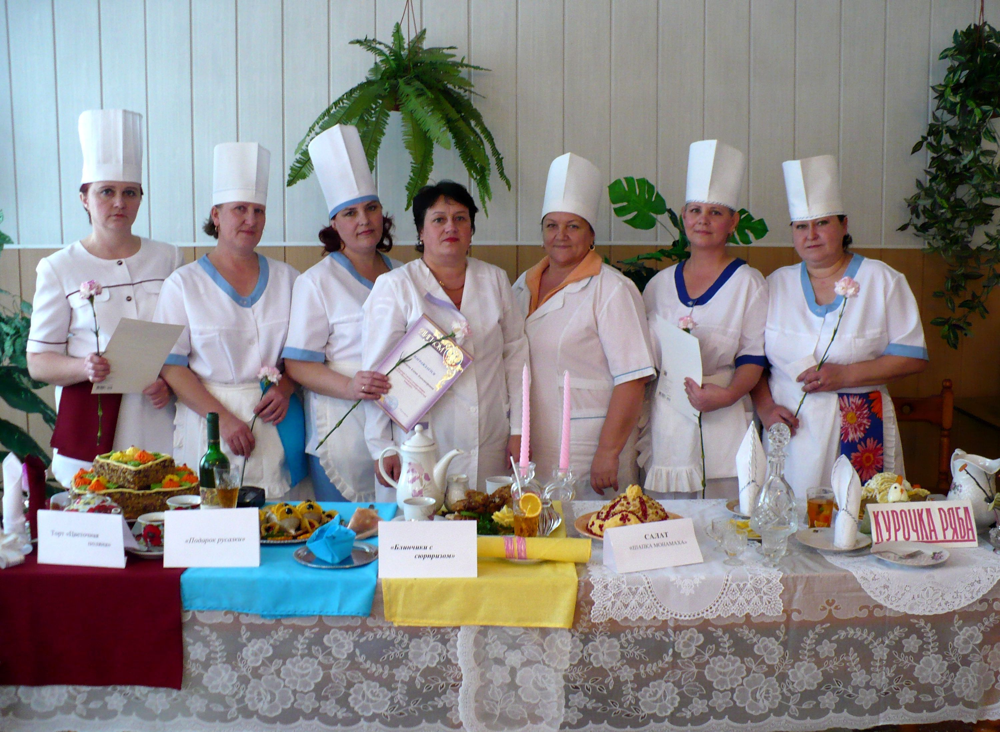
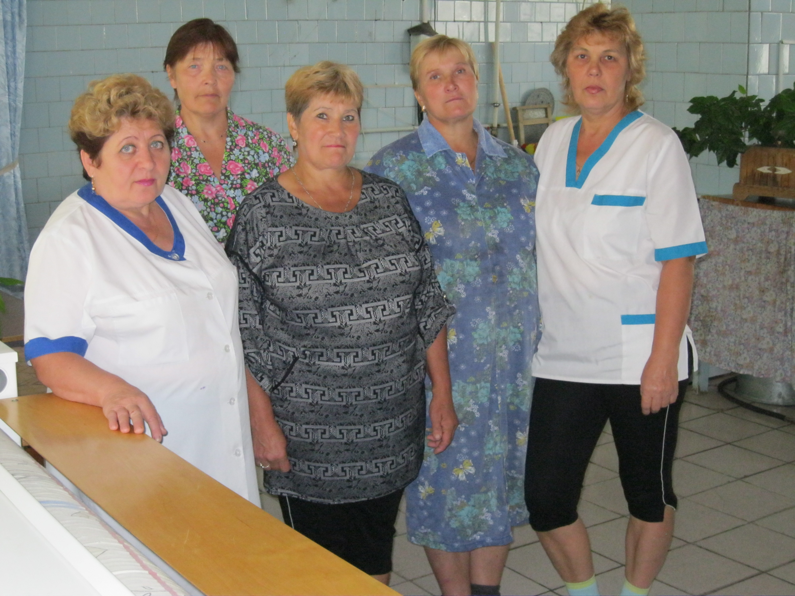
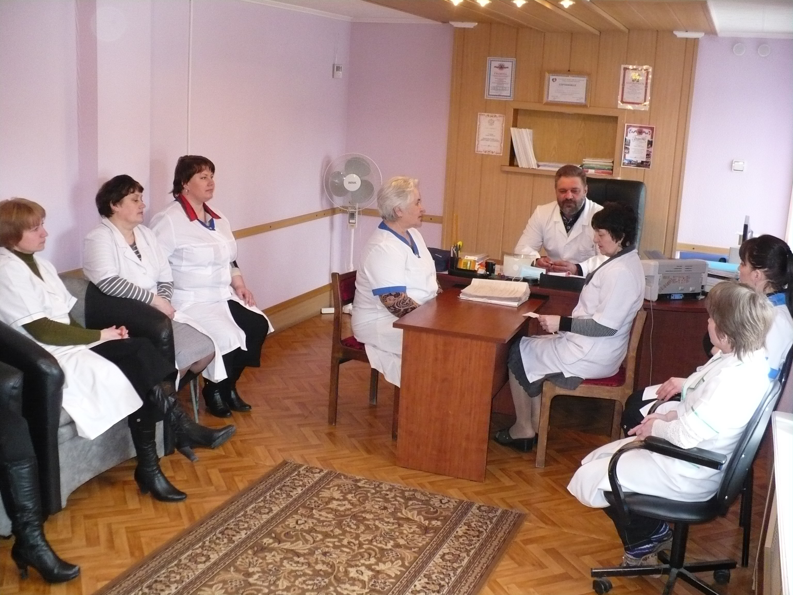
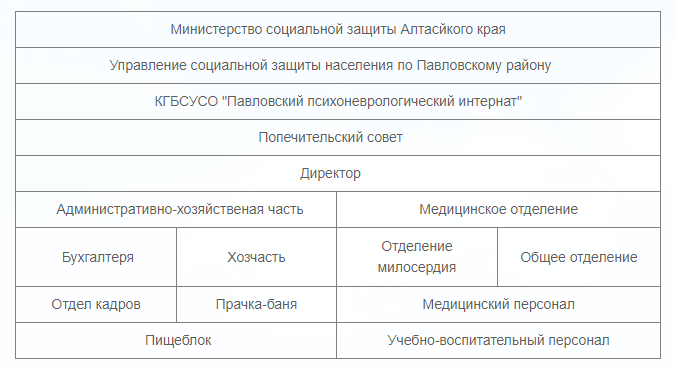

Историческая справка
Как мы живем
В одном из красивейших мест Алтайского края, районном центре с. Павловск, копируя берега речки Касмала, тянется ленточный сосновый бор. У кромки бора раскинулись жилые корпуса и хозяйственные постройки Павловского интерната.
1 октября 1980 года, символизируя открытие учреждения, здесь появился первый человек, нуждающийся в нашей помощи.
В 1983 году Павловский дом – интернат для престарелых инвалидов на основании решения Крайисполкома был реорганизован в Павловский психоневрологический интернат.
В 2005 году на основании приказа Главалтайсоцзащиты произошла реорганизация в КГСУСО «Павловский психоневрологический интернат».
Статистика беспощадно преподносит нам факты о неуклонном росте числа людей с различными хроническими заболеваниями и психическими отклонениями. Это люди с очень тонким, предельно ранимым душевным состоянием, это те люди, с которыми мы работаем. Сегодня их 330 человек.
Основные задачи медико–социального учреждения, каковым и является интернат, это:
- организация ухода (надзора) за проживающими,
- оказание им медицинской помощи,
- социально-трудовая реабилитация инвалидов,
- создание для них условий жизни, приближенных к домашним, благоприятный микроклимат – успешно выполняются.
Антропов Константин Владимирович – директор Павловского психоневрологического интерната с 10 июля 2006 года.
Заведующий медицинским отделением Сутормин Герман Иванович работает с 1993 года.
Изначально организация и становление службы среднего медицинского персонала проходила под руководством старшей медицинской сестры Речкуновой Нины Михайловны, специалиста высшей категории, награжденной Почетной Грамотой Министерства социального обеспечения РСФСР, имеющей звание «Заслуженный работник Здравоохранения РФ». Она подготовила достойную молодую смену и передала свой пост Бердниковой Ольге Владимировне с высококвалифицированным медперсоналом, среди которых 9 медсестер имеют высшую категорию, 10 человек – 1 категорию и 1 медсестра – 2 категорию.
170 человек работают в интернате, каждый день они спешат на работу, чтобы делать людям добро. В интернате 3 отделения. В отделении милосердия находятся проживающие, которые не могут ухаживать за собой. Они прикованы к постели в силу врожденной патологии либо в результате болезней.
В отделениях медико-педагогической коррекции и социально-реабилитационном проживают пациенты с умственной отсталостью разных степеней и те, кто страдает шизофренией. Жизнь этих пациентов строится в зависимости от стадии болезни. К их услугам:
- массажный кабинет,
- физиолечение,
- зубной кабинет с новейшей аппаратурой,
- замечательный фитобар, где лечению травами уделяется большое внимание,
- лаборатория, в которой по назначениям врачей проводятся все необходимые обследования.
За всю историю становления коллектив интерната добился успехов. В системе социальной защиты проводятся краевые конкурсы профессионального мастерства среди разных категорий сотрудников. Сотрудники КГБСУСО «Павловский психоневрологический интернат» неоднократно становились победителями и призерами этих конкурсов:
Карманова Татьяна Михайловна в конкурсе медицинских сестер,
Колотов Владимир Альбертович в конкурсе профессионального мастерства водителей,
Шевченко Ольга Борисовна и Романова Нина Александровна в конкурсе поваров,
Мудрова Светлана Геннадьевна в конкурсе библиотекарей.
Материально-техническое обеспечение
Имущественный комплекс КГБСУСО «Павловский психоневрологический интернат» состоит из 13 объектов недвижимости и одного земельного участка.
Объекты недвижимости находятся на территории интерната по адресу с. Павловск, пер. Пожогина 41, общая площадь помещений – 7629,5 м2.
Комплекс зданий интерната:
- Дом интернат (жилой корпус) трехэтажное здание,
- Административное здание со складским помещением,
- Банно-прачечный комбинат с дезкамерой,
- Холодильный склад,
- Овощехранилище,
- Комплекс гаражей.
В здании дома интерната (жилого корпуса) расположен пищеблок со столовой, медицинская часть, физио-кабинет, карантин, изолятор, актовый зал (кинозал), танцевальный зал, библиотека с компьютерным классом, кабинет ЛФК и массажа, парикмахерская, жилые комнаты.
В жилом корпусе находятся 8 секций, в состав которых входят: спальни, холлы для отдыха, просмотра телепередач, санузлы, душевые, бельевые, бытовые комнаты, комнаты обслуживающего персонала. Спальни рассчитаны для проживания 1 – 4 человек, в зависимости от площади помещения.
Автопарк из 7 транспортных единиц.
Территория интерната огорожена забором и разделена на зоны отдыха, на цветочно-парковые участки. Имеется зона отдыха со спортивной площадкой для волейбола, также имеются автотранспортные и хозяйственные зоны.
Наш коллектив



Структура
